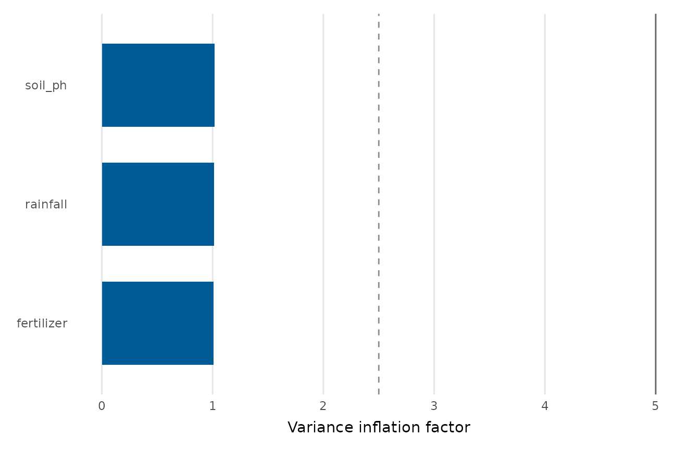

Computes a variance inflation factor (VIF) for each column of a model's design matrix and shows them as a bar chart, with reference lines at the usual rules of thumb (VIF = 5 and VIF = 10). High bars flag predictors whose coefficients are unstable because they are collinear with the others. VIFs are computed from base R (no 'car' dependency).
Usage
vif_plot(model, threshold = 5, palette = c("#005b96", "#e23b3b"), title = NULL)Value
A ggplot2::ggplot object.
Details
For models with multi-level factors, each dummy column is shown separately; interpret those with care (a generalised VIF is more appropriate for factors with several levels).
Examples
fit <- lm(yield ~ rainfall + fertilizer + soil_ph, data = crop_yield)
vif_plot(fit)
